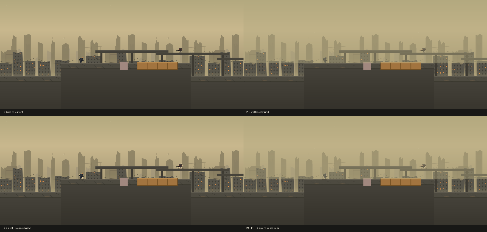

同一游戏画面(主场景实渲染,三块断桥+两只敌人+箱子的摆位),四个方案对比。
| 元素 | 底色 | 亮度 L* | 问题 |
|---|---|---|---|
| 玩家机甲 | #2e3238(冷) | 50 | 玩家 vs 中景 L 差仅 7,明度带完全重叠;玩家强调橙 #ffa04a 与中景钠灯同色值,识别色被场景吃掉 |
| 中景楼群 | #3b3931(暖) | 57 | |
| 敌人 | #332e2c(暖) | 47 | |
| 地表带 | #5b564a | 86 | 亮一档,尚可 |
根因:场景为"废都氛围"整体压暗,角色按 AC6 军规也是深底色——两条明度带宽重叠。色温(冷 vs 暖)其实已分,差在明度与强调色独占。

autotest_shots/readability_p0..p3.png。
天色雾(#b3a97f,近地浓 0.45 → 天顶淡 0.28)插在 MidStrip 与 BridgePiers 之间:只洗远景+中景,前景保持锐利。中景楼群混雾后 L 57→约 107,与玩家 L50 拉开 57。代价:楼窗灯点被洗闷一档。

玩家/敌人每个贴图件垫一圈 2px 暖白 rim(#ffe3b3,呼应钠灯天光),脚下加椭圆接触影把主体"钉"在地上。深色装甲剪影获得亮描边,在任何背景上都会跳出来——包括进到最暗的楼群前。这是性价比最高的一招:十行 canvas_item shader(art_proposals/readability/outline_rim.gdshader),不改任何美术资产。

在 P1+P2 基础上,中景钠灯 #ffa04a→#c48145、#ff8c3a→#b06b3b(变体 assets/env_rust_mid_soft.svg,原文件不动)。全场唯一纯橙 = 玩家,信号红 = 敌人,敌我识别轴更纯粹。
| 方案 | 改动 | 成本 |
|---|---|---|
| P1 | main.tscn 在 MidStrip 后加一层渐变雾(Sprite2D+GradientTexture2D,参数见 scripts/readability_preview.gd 的 _add_fog),或直接烘进 env_rust_mid.svg | ~10 行 |
| P2 | player.tscn / enemy.tscn 每个贴图件加 rim 副本 Sprite2D 挂 outline_rim.gdshader(z 垫底)+ 落影 Polygon2D | 每角色 4 个节点 |
| P3 | P1+P2 之外,MidStrip 纹理换 env_rust_mid_soft.svg(已烘焙好) | 换一行引用 |
提案产物:art_proposals/readability/(shader、烘色脚本、合成脚本)+ scripts/readability_preview.gd(四方案截图场景,可复跑)。注意:P1/P3 效果图为按 Godot 同公式离线合成(引擎窗口进程本机驱动下间歇卡死,截图管线见记忆);P0/P2 为引擎实渲染,实装后以引擎内为准微调雾浓度/rim 宽度即可。